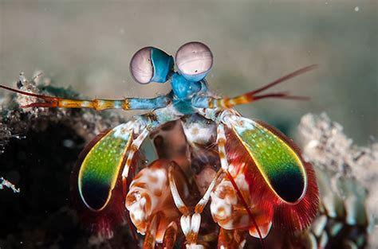

Caçadoras
Os estomatópodes são predadores ativos que caçam presas com o auxílio de um sentido de visão muito apurado e capaz de interpretar polarização no espectro ultravioleta e infravermelho
Nome científico: Odontodactylus scyllarus
Esse bichinho fofinho consegue combinar 16 cores em sua visão, um verdadeiro calendoscópio
Os estomatópodes são predadores ativos que caçam presas com o auxílio de um sentido de visão muito apurado e capaz de interpretar polarização no espectro ultravioleta e infravermelho
O segundo par de patas, muito desenvolvido, é usado tanto para atacar a presa como para se defender
Estomatópodes podem ser encontrados em quase todo o litoral brasileiro, mas não são animais fáceis de se observar pelos seus hábitos mais furtivos